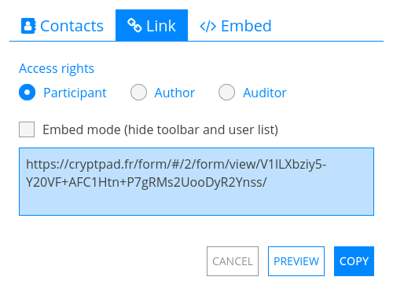

Form#

Roles#
Forms benefit from the same collaboration and privacy features as the other CryptPad applications. They also have slightly different requirements when it comes to usage, for example someone responding to a form should be able to edit their own answers but not other users' answers or the form itself. For this reason the Access rights when sharing a form are different from the other applications. Forms have 3 different roles:
Author: can edit questions and form settings.
Auditor: can view responses to the form whether or not they are public.
Participant: can answer the form and only view responses once they are made public by an author.
To share a form with a specific role, for example to send it to participants, select the role in the Share menu before selecting contacts or copying the link.

Nota
The user list, chat, and alerts about users joining the collaborative session are all disabled when a participant is responding to a form. This is to avoid giving the impression that someone is watching while they answer.
Editing a form#
To add a question, use the Add menu after the last question, or the between each question.
To delete a question use the Delete button on the question to remove.
Utilities#
Description#
Add text to the form using Markdown syntax.
Logged in users
To add an image from the CryptDrive or upload a new one, use the icon in the toolbar.
Page Break#
Split the form into pages. Only displayed to participants.
Conditional Section#
Choice and Checkbox questions can be used to display or hide a section of questions.
In the form editor, use the Add buttons between questions, or the list at the bottom of the form, to add a Conditional Section.
Ensure that there is at least one Choice or Checkbox before the section (a hint will be displayed if not). Only questions placed before the section will be available to use in the conditions.
Add some content (description text, questions) to the section using the Add button or by dragging questions into the section area.
Set some conditions using the selection menus. AND conditions must all be true together, only of the OR conditions needs to be true.
In the participant view, the section will only be displayed if the conditions are true.
Question types#
Text#
Response: one line of text
Options:
Text type: text, number, link or email
Nota
In the case of link and email, the question is highlighted in red and an error is shown to the user if their response does not fit the required format.
Paragraph#
Response: multiple lines of text
Options:
Maximum characters: limit (defaults to 1000)
Choice#
Response: one choice from the list
Options:
Add option button
Grab the handle and drag to re-order options
Delete an option with
Choice Grid#
Response: one option choice per item
Options:
Add option and Add item buttons
Grab the handle and drag to re-order items and options
Delete an item or option with
Date#
Response: pick a date and time
Checkbox#
Response: multiple choices from the list
Options:
Maximum selectable options
Add option button
Grab the handle and drag to re-order options
Delete an option with
Checkbox Grid#
Response: multiple choices for each item
Options:
Maximum selectable options (per item)
Add option and Add item buttons
Grab the handle and drag to re-order items and options
Delete an item or option with
Ordered List#
Response: order of preference for the listed options
Options:
Add option button
Grab the handle and drag to re-order options
Delete an option with
Condorcet:
Since v5.3 responses can show the results with the Condorcet method. You can select Schulze or Ranked Pairs to display the winner. The details will also show the number of matches won by each candidates.
Poll#
Response: Yes, No, or Acceptable for each of the proposed options
Option types:
Text
Add option button
Grab the handle and drag to re-order options
Delete an option with
Day
Select the date choices by clicking on them in the calendar
Time
Click on an option to select the date and time in the calendar
Click "Add multiple dates and times" to select multiple options and use Add all to add all of the selected options at once.
Form Settings#
Use the 3 buttons at the top for easy access to:
Responses (count): toggles the response page
Preview form: Opens the participant link
Copy public link: Copies the participant link
Nota
To share an author link to the form (with edit rights), use the Share menu in the toolbar.
Closing date#
Date after which the form will be closed to new responses
Use the Set closing date button to select a date from the calendar
If a closing date is set, use Remove closing date to remove it.
Anonymize responses#
All responses are anonymized regardless of whether they are logged in to a CryptPad account. If un-checked, participants who are logged-in can still opt to answer anonymously if guest access is allowed (see below).
Guest Access#
Blocked: only users who are logged in to their CryptPad account can respond to the form.
Allowed: unregistered users can respond, logged in users can choose to respond anonymously.
Editing after submission#
One time only: participants can answer the form only one time and can't modify or delete their responses after submitting them.
One time and edit/delete: participants can answer the form only one time but are allowed modify or delete their responses after submitting them.
Multiple times: participants can answer the form multiple times but can't modify or delete their responses after submitting them.
Multiple times and edit/delete: participants can answer the form multiple times and are allowed to modify or delete their responses after submitting them.
Nota
Please note that if Guest Access is allowed, unregistered users can still answer multiple times a "One time only" form if they open it on a web browser private window, or wipe the browser cookies, etc.
Publish Responses#
Allows participants who submit the form to view responses. Once enabled, this setting publishes all past and future responses.
Advertencia
Once responses are made public they cannot be made private again.
Submit message#
Add a custom message to be displayed after participants submit the form.
Color theme#
Choose the background and highlight color for the form.
Responses#
Notifications for new responses are sent to the form owner through the integrated notifications.
Advanced use-cases#
Anonymous responses with access list#
To conduct an anonymous survey with a known group of users, the anonymous answers feature can be combined with an Access List.
To access the form, participants need to be logged in to an account that is on the access list (either directly or through a team they are part of).
If anonymous answers are allowed on the form, participants are able to answer anonymously while the access list ensures they are coming from a specific group of users.
Import/Export#
Form documents themselves can be exported and imported in JSON format.
To export responses, from the Responses page, you have two possibilities:
as a CSV or JSON file use the EXPORT button
as a Spreadsheet that can be added to your drive with the EXPORT TO SHEET button
Nota
The Spreadsheet document will automatically be populated with the data from your form at the time you create it. However, due to how end-to-end encryption works, the spreadsheet content won't be automatically updated with new responses as they arrive.